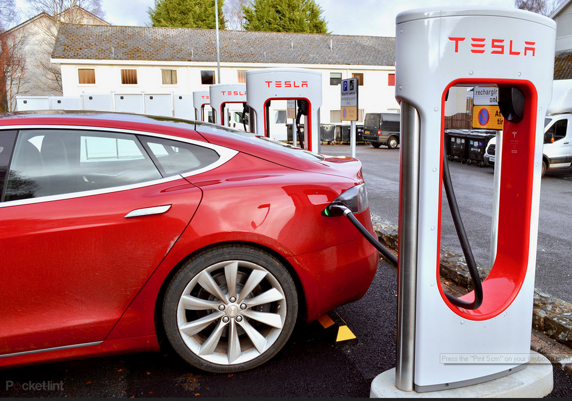
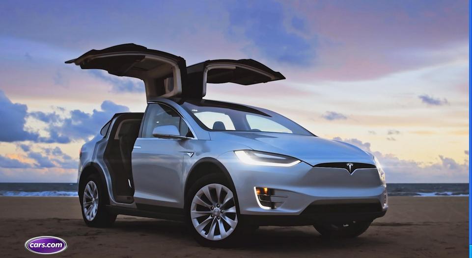

electric cars

An electric car is an automobile that is propelled by one or more electric motors, using energy stored
in rechargeable batteries. The first practical electric cars were produced in the 1880s.
Electric cars were popular in the late 19th century and early 20th century, until advances in internal combustion
engines, electric starters in particular, and mass production of cheaper petrol (gasoline) and diesel vehicles
led to a decline in the use of electric drive vehicles.
From 2008, a renaissance in electric vehicle manufacturing occurred due to advances in batteries,
and the desire to reduce greenhouse gas emissions and improve urban air quality
tesla cars

tesla is an American electric vehicle and clean energy company based in Palo Alto, California
he company specializes in electric vehicle manufacturing, battery energy storage
from home to grid scale and, through its acquisition of SolarCity, solar panel and solar roof tile manufacturing.
Tesla Motors was founded in July 2003 by engineers Martin Eberhard and Marc Tarpenning.
The company's name is a tribute to inventor and electrical engineer Nikola Tesla. The next three employees were
Ian Wright, Elon Musk,
Tesla makes two kinds of electric motors. Their oldest currently-produced design is a three-phase
four-pole AC induction motor with a copper rotor
Tesla's first "new design" store opened on November 16, 2012 in the Yorkdale Shopping Centre in Toronto, Ontario. As of March 2019,